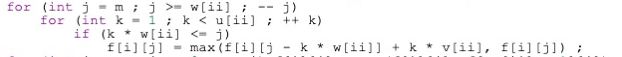
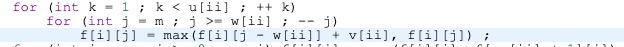

马上就是小苗的生日了，为了给小苗准备礼物，小葱兴冲冲地来到了商店街。商店街有 $n$ 个商店，并且它们之间的道路构成了一棵树的形状。
第 $i$ 个商店只卖第 $i$ 种物品，小苗对于这种物品的喜爱度是 $w_i$，物品的价格为 $c_i$，物品的库存是 $d_i$。但是商店街有一项奇怪的规定：如果在商店 $u,v$ 买了东西，并且有一个商店 $w$ 在 $u$ 到 $v$ 的路径上，那么必须要在商店 $w$ 买东西。小葱身上有 $m$ 元钱，他想要尽量让小苗开心，所以他希望最大化小苗对买到物品的喜爱度之和。
这种小问题对于小葱来说当然不在话下，但是他的身边没有电脑，于是他打电话给同为OI选手的你，你能帮帮他吗？
对于全部的测试点，保证 $1\leq n\le 500$，$1\le m\le 4000$，$1\le T \le 5$，$0\le w_i\le 4000$，$1\le d_i\le 100$ 。
然後大概是整理過的題目，但個人感覺還是有必要再整理一遍的。
題意大概是說，在樹上做背包，但是不允許選不連通的點。据说是经典套路题，但我不是很会…
先考慮比較簡單的 $01$ 背包。考慮一般這種情況需要記錄一下每個點用沒用，所以比較直接的想法是枚舉每個點當根，然後求一個以該點為根時的連通塊出來。但問題就在於合併子樹的複雜度是 $O(V^2)$ （個人覺得存在某種方式的 $V\log V$ 合併，畢竟形式上十分的NTT）。但這樣就是 $n^2V^2$ 的了，所以考慮一個比較經典的優化，在 $dfs$ 序上做，記錄一下每個點子樹內 $dfs$ 序的最大值 $r_i$ 。定義 $f_{i,v}$ 表示 $i\sim n$ 都被考慮完了，代價為 $v$ 時的結果。轉移的話，如果選 $i$ 就從 $i+1$ 來轉移，不選 $i$ 那麼整棵子樹都不能選，從 $r_i+1$ 轉移。
然後如果是多重背包的話，套一個單調隊列就可以做到 $n^2V$ 了，但是實際上這題很水，直接 $O(nV\max\{c_i\})$ 的多重背包也沒有問題。然後就是在寫多重背包的時候，發現了很弱智的一點，就是『物品個數』和『體積』哪一個先枚舉的問題…
顯然的是應該先枚舉體積，否則同一層的狀態會互相嵌套。所以應該這麼寫：

但是還有另一種寫法，用到了『狀態堆疊』這個 trick，雖然複雜度不變但是看起來更帥一點

然後考慮如何消掉一個 $n$ ，發現這個 $dp$ 很符合點分治的特點，每次將分治中心作為根，那麼選了根就是經過分治中心，不經過跟就是沒經過分治中心。於是最後的複雜度是 $nV\max\{c_i\}\log n $ 。
然後就是單調隊列優化多重背包，感覺這個東西很玄妙，十分深刻（被 uoj 群友提醒之後發現似乎不是很深刻，只是自己做題少）：
考虑原本的转移
其中需要优化掉的是 $k$ 这一维，发现他原本并没有任何对于转移单调的限制，于是考虑变一下形。
令 $d=j\bmod w_i$，$s=\lfloor\frac{j}{w_i}\rfloor$，那么转移就可以写作
发现转移条件 $s-k\leq c_i\Longrightarrow k\geq s-c_i=\lfloor\frac{j}{w_i}\rfloor-c_i$ ，可知對於一個相同的 $i$，不同的 $j$ ，轉移區間的左端點是不降的，于是就对每个 $d$ 用单调队列即可。
仔細想了想，大概是這麼一個思考過程：觀察上面那個式子可以知道，每次枚舉的會是一些 $w_i$ 的倍數，那麼對於任意一個 $j$ ，轉移路徑裡最初的轉移點就一定在 $0\sim w_i-1$ 中進行，注意到這一點之後自然考慮對於每一個 $d$ 分別做。那麼可以發現，對於每個 $d$ 而言，$d+kw$ 的轉移點都是固定的，比如 $d+7w$ 就只能從 $d+w,d+2\cdot w,\cdots ,d+6*w$ 來轉移，同時由於數量 $c_i$ 的限制，可以知道對於每個 $j$ 只能從 $\geq \lfloor\frac{j}{w_i}\rfloor-c_i$ 的其它 $j$ 來轉移，就變成了一個區間彼此不包含的轉移問題，顯然可以用單調隊列來優化。
然後最後複雜度就變成了 $O(nV\log n )$ 。
感覺這個單調隊列的實現有億點細節，可能需要再琢磨一下。
思考了一下，順便去問了 zay，發現這個轉移有點東西：
1、由於轉移時是要從 $i-1$ 的狀態轉移，一開始初始賦值完畢之後 $i$ 就是 $i-1$ 的狀態了。那麼每次入隊的時候要保證把 $i-1,j$ 入隊而不是 $i,j$ 。所以入隊的時候要是轉移前的結果。
2、注意到單調隊列有個問題，就是兩個端點『左閉右閉』和『左閉右開』。左閉右閉的時候需要注意判斷 while (h <= t)，因為當 $h=t$ 的時候還會有元素在隊伍當中。
3、很 sb 的一點，就是手寫隊列，如果不能保證每次 $dp$ 前隊列都是空的，那麼轉移的時候就需要判斷是否為空，不然會從不合法的狀態點轉移。
1 | void calc(int *dp, int x){ |
感覺自己真的沒怎麼寫過單調隊列，同時也對單調隊列理解的不是很好的樣子。
總代碼：
1 |
|
最終被 zay 的二進制分組吊著錘，感覺很不爽 QAQ